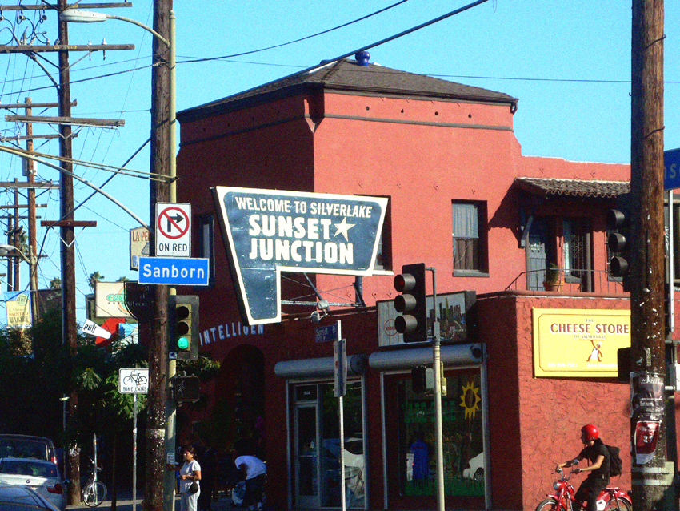
Silver
Lake
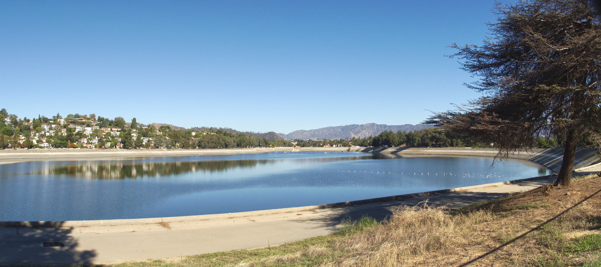
- Neighborhood anchor
- Silver Lake Reservoir
- Sunset + Maltman
- 96 / 100 walk score
- To Downtown LA
- ≈10–15 min
- The reservoir loop
- 2.5 mi
The walk score is for Sunset Boulevard at Maltman Avenue, not the entire neighborhood. Drive times vary with traffic.
Water, hills, and a version of LA that never sits still.
Silver Lake asks you to slow down before it shows you anything else. The reservoir does that on its own: a loop full of dog walkers and runners in the morning, then long shadows and a different crowd when the hills go gold.
Every architecture era Los Angeles has tried is up here somewhere. Spanish bungalows, Craftsman flats, midcentury experiments, and hillside contemporaries sit close enough together that a walk around the block becomes a short course in LA architectural history.
The honest tradeoff: walkability changes fast. Sunset Junction and the flatter streets make daily life easy on foot. The hills trade that ease for views, privacy, and driveways you should see in person before falling for the photos.
Let me give you a tourmiles
The reservoir loop · morning to gold hour
The place that explains Silver Lake.
The reservoir is the neighborhood’s shared routine. The loop gives people a reason to leave the hills, pass the same dogs, notice what is changing, and belong to a place without needing an invitation.
It is also the clearest way to understand the neighborhood’s shape. One side feels tucked into green slopes; another opens toward midcentury homes and long views. The water stays level while everything around it climbs.
Explore Silver Lake Recreation CenterWhere in LA is Silver Lake?
Silver Lake sits northwest of Downtown Los Angeles, below Los Feliz and west of the Los Angeles River. Echo Park is to the southeast; Virgil Village and East Hollywood meet its western edge.
Sunset Boulevard carries the busiest commercial life. Silver Lake Boulevard connects that energy to the reservoir, while Glendale Boulevard gives the eastern side a quicker route toward Downtown and the 5 freeway.
The useful distinction: Silver Lake is not one lifestyle. Sunset Junction is dense and walkable, the reservoir is its own orbit, and the hillside streets can feel quiet and removed only minutes away.
The pockets.
The block matters as much as the neighborhood's name.

Sunset Junction
The commercial heart. Coffee, wine bars, record shops, and blocks you can genuinely walk to all of them from.
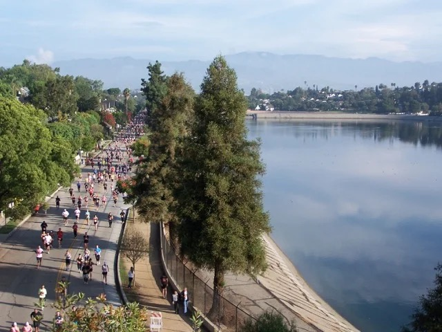
The Reservoir Loop
Mid-century homes ringing the water, reservoir views, and the shared daily rhythm that makes this pocket feel connected.
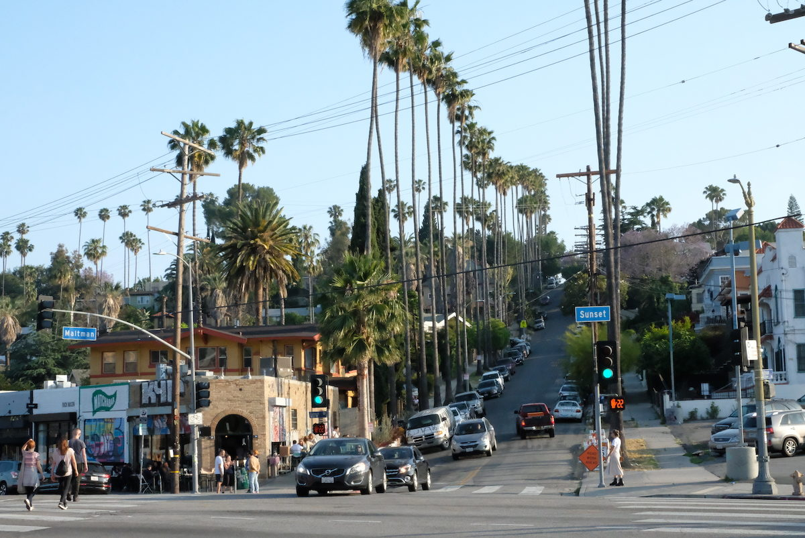
Effie Street & Maltman Avenue
Flatter, walkable, and known for a stronger block-level sense of community than most of the East Side.
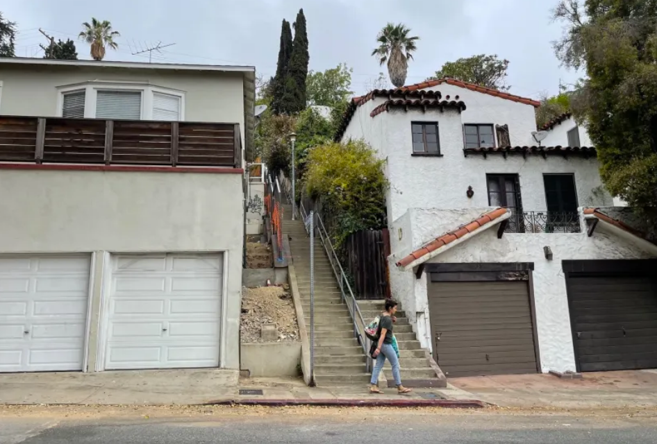
Moreno Highlands & The Hillside Streets
Contemporaries, skyline views, and streets steep enough that you’ll want to walk them before you fall for the view.
Places I send people.
Four very different reasons to stay in Silver Lake a little longer.
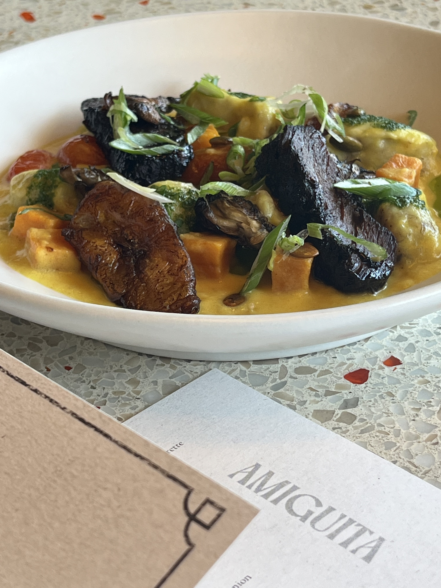
Amiguita
A new Afro-Caribbean hideaway for family-style plates, wine, plantain gnocchi, and a dinner that feels different from everything around it.
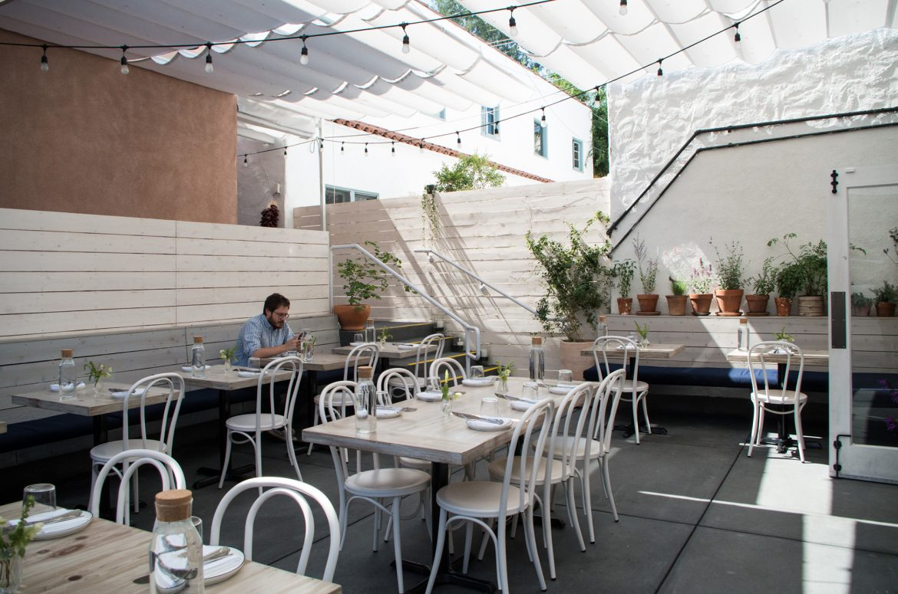
Botanica
Seasonal Southern California cooking, natural wine, and a bright patio that has earned its place in the neighborhood’s regular rotation.
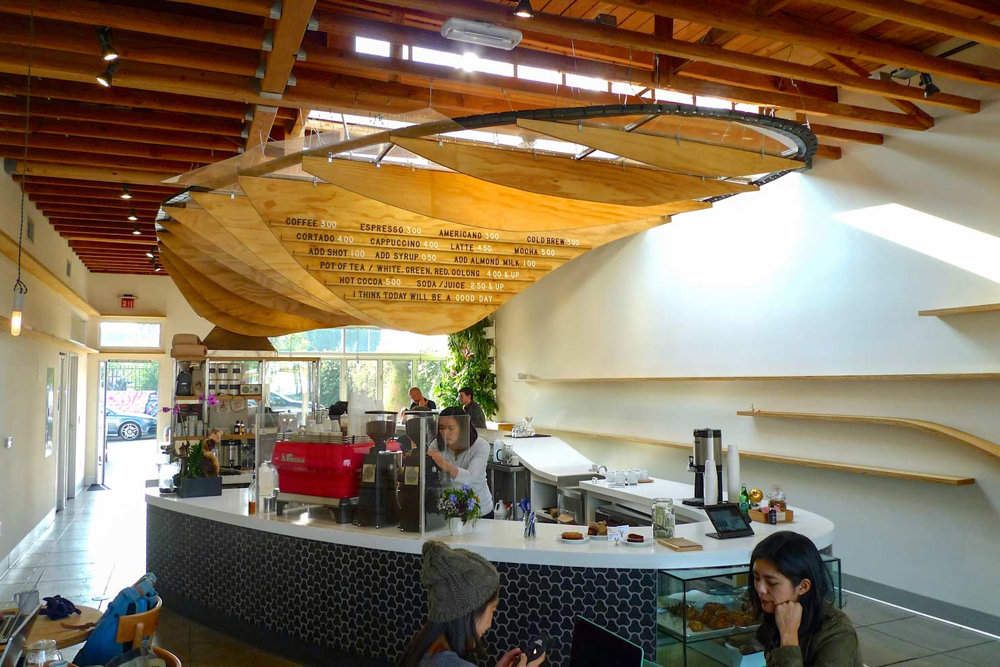
Dinosaur Coffee
A longtime Sunset fixture with room to sit, coffee from Woodcat, and an interior that never forgot how to have a little fun.
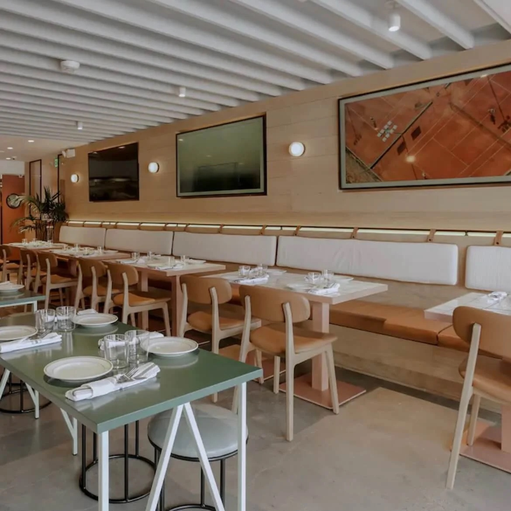
Pijja Palace
An Indian sports bar by way of Silver Lake: malai rigatoni, green-chutney pizza, loud tables, and a night with real energy.
Schools in and around Silver Lake
Micheltorena Street ElementaryPublic · K–5 · 8/10
Ivanhoe ElementaryPublic · K–5 · 9/10
Thomas Starr King Middle SchoolPublic · 6–8 · 6/10
John Marshall Senior HighPublic · 9–12 · 8/10
GreatSchools ratings are current as of August 2026 and may change. A rating is not the whole story. Assignments and eligibility depend on the exact address; verify through the LAUSD School Directory.
Parks & outdoor time
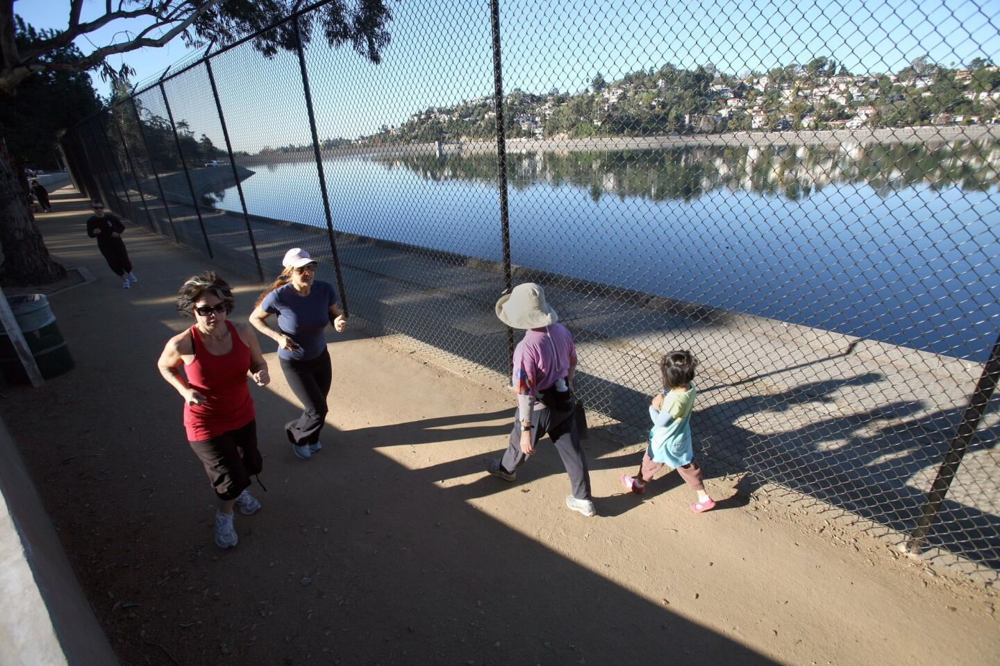
The Reservoir Loop
The neighborhood’s 2.5-mile shared ritual, with water, hills, and a different rhythm depending on the hour.
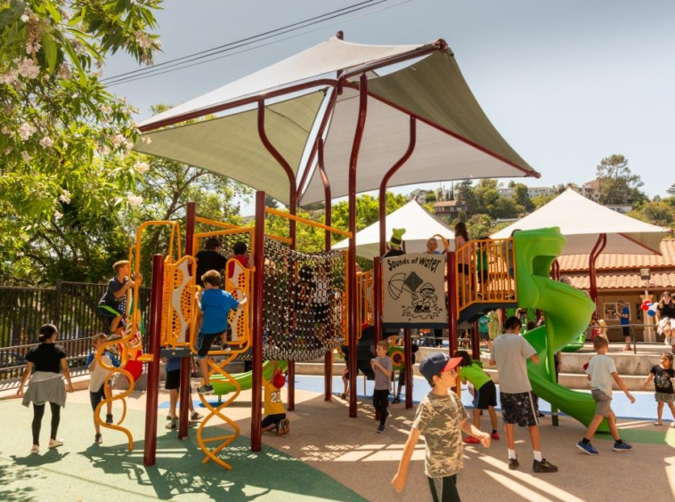
Silver Lake Recreation Center
Fields, basketball courts, classes, and the practical community side of life beside the water.
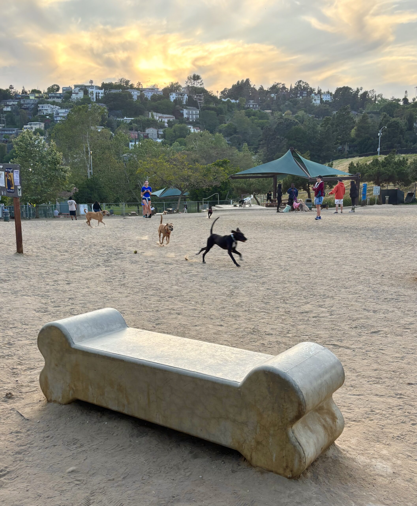
Silver Lake Dog Park
A 1.25-acre off-leash park beside the reservoir, with separate space for small or timid dogs.
Silver Lake on your mind? I’ve got you.
Tell me which version of Silver Lake feels like yours. We can start with the streets, then find the house.
Let’s start here